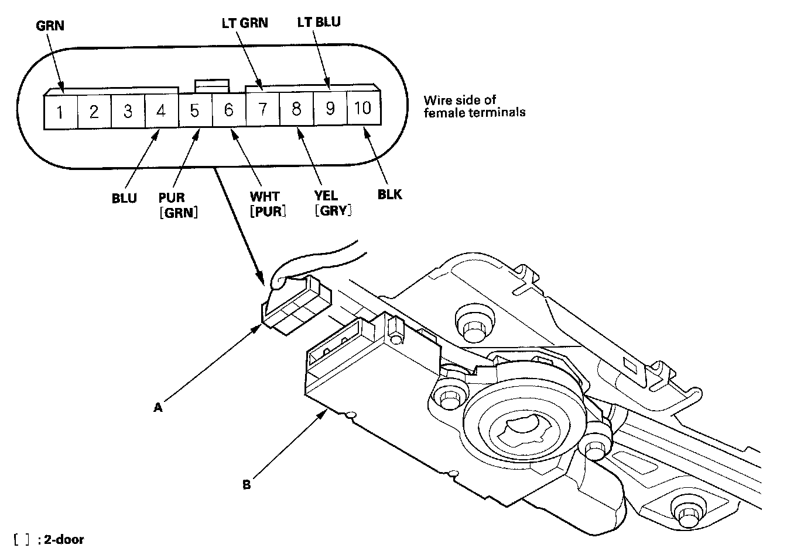
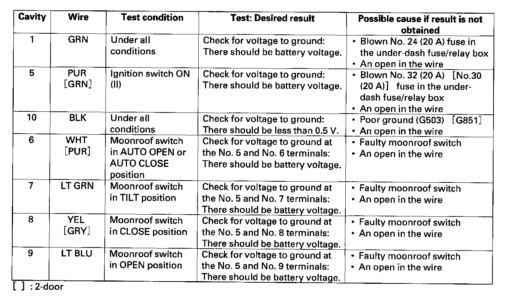
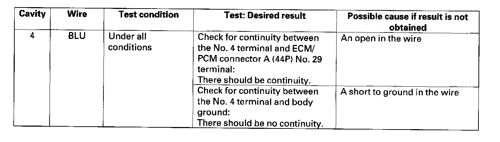

Moonroof Control Unit Input Test
Moonroof Control Unit Input TestNOTE: If the moonroof works OK manually, but will not work in AUTO, or reverses frequently (obstacle detection), do the moonroof calibration before proceeding with the input test.
1. Turn the ignition switch OFF.
2. Remove the headliner.

3. Disconnect the 10P connector (A) from the moonroof control unit (B).
4. Inspect the connector and socket terminals to be sure they are all making good contact.
- If the terminals are bent, loose or corroded, repair them as necessary, and recheck the system.
- If the terminals look OK, go to step 5.

5. Reconnect the connector to the control unit, and make these input tests at the connector.
- If any test indicates a problem, find and correct the cause, then recheck the system.
- If all the input tests prove OK, go to step 6.
6. Check the ECM/PCM DTCs. If there is no DTC, jump the SCS line with the HDS, then disconnect the ECM/PCM connector A (44P), and the moonroof control unit/motor 10P connector.

7. Make these input tests at the connector.
- If any test indicates a problem, find and correct the cause, then recheck the system.
- If all the input tests prove OK, the control unit must be faulty; replace the moonroof control unit/motor.